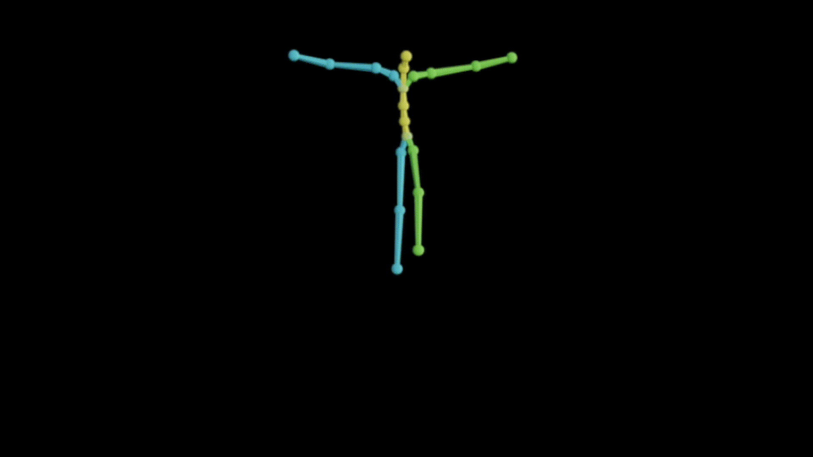
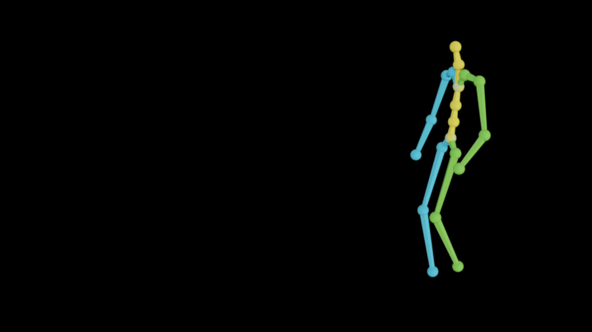
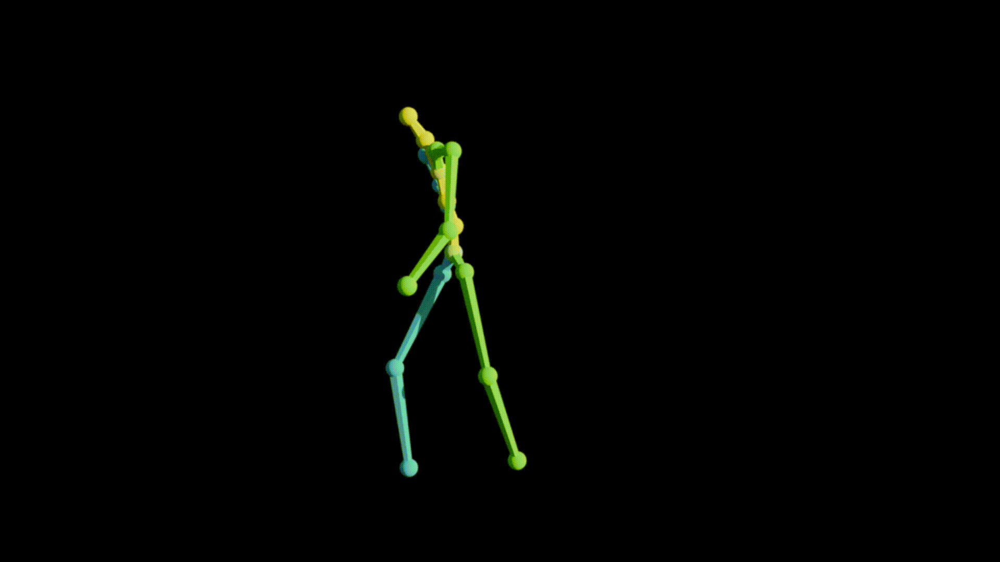
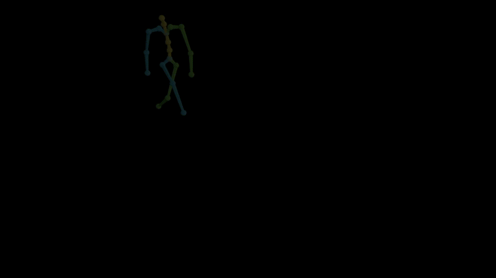
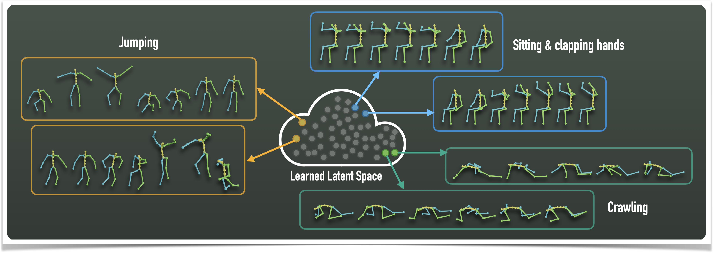
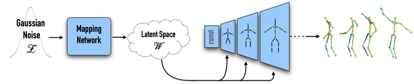
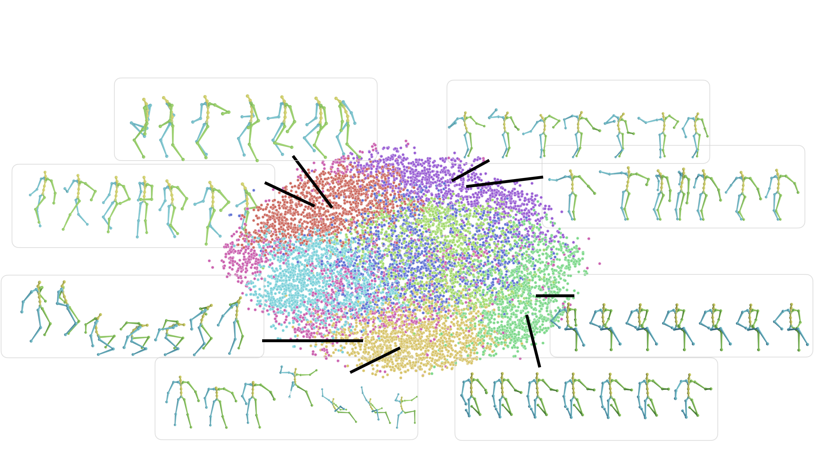

MoDi: Unconditional Motion Synthesis from Diverse Data






Paper
Code
The emergence of neural networks has revolutionized the field of motion synthesis. Yet, learning to unconditionally synthesize motions from a given distribution remains a challenging task, especially when the motions are highly diverse. We present MoDi, an unconditional generative model that synthesizes diverse motions. Our model is trained in a completely unsupervised setting from a diverse, unstructured and unlabeled motion dataset and yields a well-behaved, highly semantic latent space.
Our design is inspired by the powerful architecture of StyleGAN [Karras et al. 2019], which has been shown to learn a disentangled latent space and allows incredible editing capabilities. However, there is a significant domain gap between images and motion data. Images possess a regularized spatial structure, while motion data is an irregular one, which consists of a skeletal graph axis, and a temporal one. Unlike StyleGAN, which consists of a hierarchy of convolutional layers applied on a spatial domain, here we apply the convolutions on time-vertex layers, using skeleton-aware operators [Aberman et al. 2020a], and the network generates a temporal sequence of poses rather than a single image.
Our generator can unconditionally synthesize high-quality, diverse motions.

MoDi is designed to learn highly diverse datasets, whose data is unstructured and cannot be semantically clustered using common attributes. In the following figure we observe the latent space , split into 8 clusters using K-means. Latent space values belong to 10,000 randomly synthesized motions. We randomly choose several motions from each cluster and depict them. As one can see, motions represented by different clusters are semantically different, and motions that belong to the same cluster, are semantically similar.
We demonstrate the linearity of the latent space by interpolating between the latent values and observing the motions generated out of the interpolation stages.

A disentangled latent space contains direction vectors that consistently correspond to individual factors of variation. While editing in such a direction, the motion should remain intact except for the edited attribute. In the following figure we observe motions generated from latent values, which reside on a vector that affects the raising of the right hand.

MoDi can take a motion sequence that was not seen by the network during training and find a point in the latent space that can produce this motion.

@inproceedings{raab2023modi,
title={Modi: Unconditional motion synthesis from diverse data},
author={Raab, Sigal and Leibovitch, Inbal and Li, Peizhuo and Aberman, Kfir and Sorkine-Hornung, Olga and Cohen-Or, Daniel},
booktitle={Proceedings of the IEEE/CVF Conference on Computer Vision and Pattern Recognition (CVPR)},
pages={13873--13883},
year={2023}
}